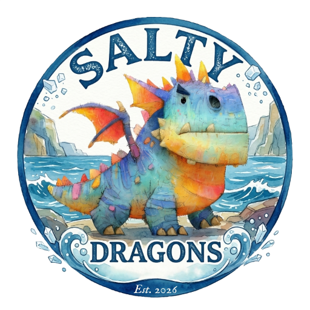

Salty Dragons
Dungeons & Dragons
Adventurers League
Roll for initiative, Sausalito
Adventurers League
Roll for initiative, Sausalito

New to D&D or AL? No prep needed — bring yourself; we’ll help you roll up a character and get you to the table. Veteran Adventurer? Jump into the action, meet local players, or even pitch in behind the DM screen.
Play when you can, skip when you can’t: Adventurers League is D&D’s official organized play program: the same rules and adventures running at game stores, conventions, and online tables worldwide. Your character keeps their level, gold, and gear between sessions, and travels with you to any other AL table.
We play every 1–3 weeks at Bacchus and Venus. At our table, scheduling lives on Discord — and so do resources for getting started.